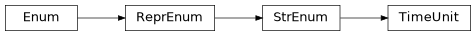

indicative.resampler#
Classes#
TimeUnit is an enumeration of time units. |
|
A resampler to resample a stream of PriceDataPoint into a fixed interval. |
|
Combines a History object with a Resampler for managing and resampling data points. |
Functions#
|
Calculate a pandas Timedelta object. |
|
Calculate the next timestamp given a starting timestamp and a timedelta. |
|
Append the latest PriceDataPoint to the history. |
|
Pop the latest data point from the history if it already exists. |
|
Replace the latest data point in the history if it's older than the given next timestamp. |
Module Contents#
- class indicative.resampler.TimeUnit[source]#
Bases:
enum.StrEnumTimeUnit is an enumeration of time units.
- indicative.resampler.calc_timedelta(unit, n)[source]#
Calculate a pandas Timedelta object.
- Parameters:
unit (TimeUnit) – The unit of time for the timedelta.
n (PositiveInt) – The number of units for the timedelta.
- Returns:
A pandas Timedelta object representing the specified duration.
- Return type:
pd.Timedelta
- indicative.resampler.calc_next_timestamp(timestamp, timedelta)[source]#
Calculate the next timestamp given a starting timestamp and a timedelta.
- Parameters:
timestamp (Timestamp) – The starting timestamp.
timedelta (pd.Timedelta) – The timedelta to add to the timestamp.
- Returns:
The resulting timestamp after adding the timedelta.
- Return type:
pd.Timestamp
- indicative.resampler.append_latest(history, input_)[source]#
Append the latest PriceDataPoint to the history.
- Parameters:
history (History) – The history object to which the input data point will be registered.
input (PriceDataPoint) – The data point to be appended to the history.
input_ (indicative.datas.PriceDataPoint)
- Returns:
None
- Return type:
None
- indicative.resampler.pop_latest(history, input_)[source]#
Pop the latest data point from the history if it already exists.
- Parameters:
history (History) – The history object from which the latest data point will be popped.
input (PriceDataPoint) – The data point to be compared with the history for uniqueness.
input_ (indicative.datas.PriceDataPoint)
- Returns:
None
- Return type:
None
- indicative.resampler.replace_latest(history, input_, next_timestamp, timestamp_field)[source]#
Replace the latest data point in the history if it’s older than the given next timestamp.
- Parameters:
history (History) – The history object from which the latest data point will be popped and appended.
input (PriceDataPoint) – The data point to be compared with the history for uniqueness.
next_timestamp (pd.Timestamp) – The timestamp of the next sample point to be compared with the history.
timestamp_field (str) – The field name of the timestamp in the history object.
input_ (indicative.datas.PriceDataPoint)
- Returns:
None
- Return type:
None
- class indicative.resampler.Resampler[source]#
A resampler to resample a stream of PriceDataPoint into a fixed interval.
- resample(input_, history)[source]#
Resample a stream of PriceDataPoint into a fixed interval.
- Parameters:
input (PriceDataPoint) – The data point to be resampled.
history (History) – The history object to which the resampled data point will be registered.
input_ (indicative.datas.PriceDataPoint)
- Returns:
None
- Return type:
None
- class indicative.resampler.HistoryWithResampler[source]#
Combines a History object with a Resampler for managing and resampling data points.
- Properties:
records (list[Record[object]]): The list of records in the history. fields (list[str]): The list of field names in the history.
- history: indicative.history.History = None[source]#
- property records: list[indicative.history.Record[object]][source]#
Gets the records from the history.
- Returns:
The records in the history.
- Return type:
list[Record[object]]
- property fields: list[str][source]#
Gets the field names from the history.
- Returns:
The field names in the history.
- Return type:
list[str]
- __getitem__(name)[source]#
Accesses a record by its name.
- Parameters:
name (str) – The name of the record.
- Returns:
The record associated with the given name.
- Return type:
Record[object]
- __or__(other)[source]#
Allows using the | operator for applying a callable to the history.
- Parameters:
other (Callable) – The callable to be applied.
- Returns:
The result of applying the callable to the history.
- Return type:
Any
- __ror__(other)[source]#
Allows using the | operator to add or resample data points into the history.
- Parameters:
other (PriceDataPoint | PriceDataArray | NamedTupleProtocol | Iterable) – The data to be processed.
- Raises:
ValueError – If the type of other is unsupported.
- Return type:
Self